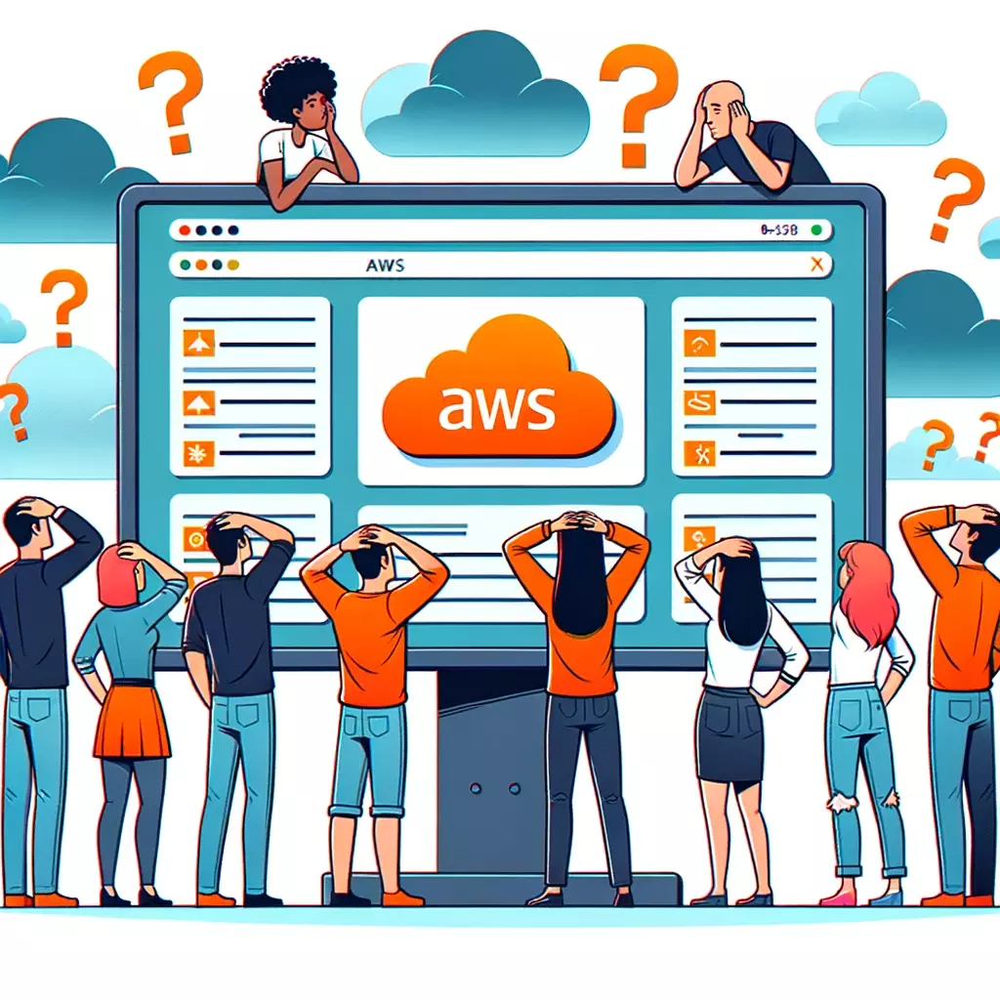

AWS - IAC - CDK
randy.vroegop@luminis.eu
github.com/vroegop
Goal for 2023
To the rescue

Goal for today
Infrastructure in the cloud
Infrastructure in the cloud
user interface
Infrastructure in the cloud
cli
Infrastructure in the cloud
beanstalk
Infrastructure in the cloud
cloudformation
Infrastructure in the cloud
Terraform
Infrastructure in the cloud
cdk
CDK
const lambdaToDynamo = new LambdaToDynamoDB(this, 'id1', {
lambdaFunctionProps: {
code: Code.fromAsset(`lambda`),
runtime: Runtime.NODEJS_18_X,
handler: 'index.handler'
},
});
new CloudFrontToApiGatewayToLambda(this, 'id2', {
existingLambdaObj: lambdaToDynamo.lambdaFunction
});Cloudformation
{
"Resources": {
"testlambdadynamodbstackLambdaFunctionServiceRole758347A1": {
"Type": "AWS::IAM::Role",
"Properties": {
"AssumeRolePolicyDocument": {
"Statement": [
{
"Action": "sts:AssumeRole",
"Effect": "Allow",
// 1200 more lines of codeConclusion
A bit about AWS
EC2
Elastic Cloud Compute
VPS hosted on AWS
EC2

// Create a new VPC
const vpc = new ec2.Vpc(this, 'MyVpc');
// Create a security group
const securityGroup = new ec2.SecurityGroup(this, 'SecurityGroup', {
vpc,
description: 'Allow SSH and HTTPS',
});
// Replace 'ip-address' with your actual IP address
securityGroup.addIngressRule(ec2.Peer.ipv4('ip-address/32'),
ec2.Port.tcp(22), 'Allow SSH access from this IP');
securityGroup.addIngressRule(ec2.Peer.anyIpv4(),
ec2.Port.tcp(443), 'Allow HTTPS access from anywhere');
const instance = new ec2.Instance(this, 'Instance', {
vpc,
instanceType: new ec2.InstanceType('t3.micro'), // Instance size
machineImage: new ec2.AmazonLinuxImage(), // OS
securityGroup: securityGroup,
keyName: 'your-key-pair-name' // Replace with your key pair name
});Quick demo
Automate everything
const instance = new ec2.Instance(this, 'Instance', {
// ... other properties ...
userData: ec2.UserData.custom(fs.readFileSync('userdata.sh', 'utf8'))
});#!/bin/bash
# Node.js installation
curl -sL https://rpm.nodesource.com/setup_14.x | sudo bash -
sudo yum install -y nodejs
# Copy files from S3
aws s3 cp s3://your-bucket-name/path/to/your/website /var/www/html --recursive
# Start the Node.js application
cd /var/www/html
npm install
nohup node index.js &Automate everything
// S3 bucket for website
const websiteBucket = new s3.Bucket(this, 'WebsiteBucket', {
// Bucket properties
});
// Deploy website files to S3
const websiteDeployment = new s3deploy.BucketDeployment(this, 'DeployWebsite', {
sources: [s3deploy.Source.asset('./website')],
destinationBucket: websiteBucket,
});
// EC2 instance setup
const instance = new ec2.Instance(this, 'MyInstance', {
// EC2 instance properties and user data
});
// Ensure EC2 instance is created after files are uploaded to S3
instance.node.addDependency(websiteDeployment);Lambda
VPS that reboots often
What lambda solves:
- Provisioning or managing servers
- Creating workload-aware cluster scaling logic
- Maintaining event integrations
- Managing runtimes
What lambda solves:
- Provisioning or managing servers
- Creating workload-aware cluster scaling logic
- Maintaining event integrations
- Managing runtimes
What lambda solves:
- AWS provisions and manages servers
- Creating workload-aware cluster scaling logic
- Maintaining event integrations
- Managing runtimes
What lambda solves:
- AWS provisions and manages servers
- Creating workload-aware cluster scaling logic
- Maintaining event integrations
- Managing runtimes
What lambda solves:
- AWS provisions and manages servers
- Lambda's run in parallel
- Maintaining event integrations
- Managing runtimes
What lambda solves:
- AWS provisions and manages servers
- Lambda's run in parallel, combine with SQS for cluster scaling
- Maintaining event integrations
- Managing runtimes
What lambda solves:
- AWS provisions and manages servers
- Lambda's run in parallel
- Maintaining event integrations
- Managing runtimes
What lambda solves:
- AWS provisions and manages servers
- Lambda's run in parallel
- Use lambda as target on events
- Managing runtimes
What does a lambda look like
export const handler = async () => {
const Item = {
id: 'abc123',
value: 'Hello CDK'
};
await dynamo.send(new PutCommand({TableName, Item}));
return {
statusCode: 200,
body: `Success writing to database: ${JSON.stringify(Item)}`,
};
}
In CDK
const lambdaToDynamo = new LambdaToDynamoDB(this, 'id', {
lambdaFunctionProps: {
// This points to the ./lambda folder in this project
code: Code.fromAsset(`lambda`),
runtime: Runtime.NODEJS_18_X,
handler: 'index.handler'
},
});What lambda solves:
- Select a managed runtime
- Lambda's run in parallel
- Use lambda as target on events
- Managing runtimes
What lambda solves:
- Select a managed runtime
- Lambda's run in parallel
- Use lambda as target on events
- AWS manages runtimes or create your own
DynamoDB
- Support peaks of more than 20 million requests per second
- Secure your data with encryption at rest, automatic backup and restore
- Automatically scales up and down to fit your needs
this.eventDatabase = new Table(this, 'EventDatabase', {
tableName: 'EventDatabase',
partitionKey: {
name: 'eventId',
type: AttributeType.STRING,
},
sortKey: {
name: 'timestamp',
type: AttributeType.STRING,
},
billingMode: BillingMode.PAY_PER_REQUEST,
deletionProtection: true,
stream: StreamViewType.NEW_IMAGE,
});SQS
- Serverless queue service
- Almost unlimited throughput
- FiFo queues possible
- Allows cluster parallelization for lambda
Cluster parallelization
CDK code
const dartsEventSqsQueue = new Queue(this, 'id', {
queueName: 'dartsEventQueue.fifo',
visibilityTimeout: Duration.seconds(30),
fifo: true, // Enable FIFO queue to use message groups
removalPolicy: RemovalPolicy.DESTROY,
deadLetterQueue: {
maxReceiveCount: 10,
queue: new Queue(this, 'dartsEventQueue.deadLetterQueue', {
queueName: 'dartsEventQueue-deadLetterQueue.fifo',
fifo: true,
removalPolicy: RemovalPolicy.RETAIN,
}),
}
});Create an API
CDK code
const lambdaToDynamo = new LambdaToDynamoDB(this, 'lambda2ddb', {
lambdaFunctionProps: {
code: Code.fromAsset(`src/lambda`),
runtime: Runtime.NODEJS_18_X,
handler: 'index.handler' // index.ts file, handler function
},
});src/lambda/index.ts
export const handler = async () => { const Item = {id: new Date().toISOString(), value: 'Hello CDK'}; await dynamo.send(new PutCommand({TableName, Item})); return { statusCode: 200, body: `Success writing to database: ${JSON.stringify(Item)}`, }; }
const lambdaToDynamo = new LambdaToDynamoDB(this, 'lambda2ddb', {
lambdaFunctionProps: {
code: Code.fromAsset(`src/lambda`),
runtime: Runtime.NODEJS_18_X,
handler: 'index.handler'
},
});new CloudFrontToApiGatewayToLambda(this, 'cloudfront-api-lambda', {
existingLambdaObj: lambdaToDynamo.lambdaFunction
});const lambdaToDynamo = new LambdaToDynamoDB(this, 'lambda2ddb', {
lambdaFunctionProps: {
code: Code.fromAsset(`src/lambda`),
runtime: Runtime.NODEJS_18_X,
handler: 'index.handler'
},
});export const handler = async () => {
const Item = {id: new Date().toISOString(), value: 'Hello CDK'};
await dynamo.send(new PutCommand({TableName, Item}));
return {
statusCode: 200,
body: `Success writing to database: ${JSON.stringify(Item)}`,
};
}new CloudFrontToApiGatewayToLambda(this, 'cloudfront-api-lambda', {
existingLambdaObj: lambdaToDynamo.lambdaFunction
});API Gateway
Separates public internet from your architecture
Cloudfront
AWS Servers provide caching on edge locations
CI/CD
Even your CI/CD can be set up via CDK
Restaurant application
Waiters
Kitchen
Counter
Waiters take orders
Kitchen reads orders
Payment & Reservations
Application structure
Application structure
Application structure
Separating reads & writes
For learning only, it's overengineered.Architecture
Architecture
Architecture

Architecture
Architecture
Architecture
Architecture
Architecture
Architecture
Bonus: set up CI/CD
Constructs
Lambda, DynamoDB, S3, DNS...
Construct levels
Hosting a simple website
Level 1 construct
// Create S3 bucket
const bucket = new CfnBucket(this, 'MyBucket', {
bucketName: 'my-bucket',
accessControl: 'Private'
});
// define distribution
const distribution = new cloudfront.CloudFrontWebDistribution(this, 'cloud101Distribution', {
originConfigs: [
{
s3OriginSource: {
s3BucketSource: bucket,
},
behaviors: [
{
isDefaultBehavior: true,
forwardedValues: {
queryString: false,
cookies: {
forward: 'none',
},
},
minTtl: cdk.Duration.seconds(0),
defaultTtl: cdk.Duration.seconds(0),
maxTtl: cdk.Duration.seconds(0),
},
],
},
],
aliasConfiguration: {
acmCertRef: props?.cloudfrontCertificate?.certificateArn,
names: ['cloud101.nl'],
},
errorConfigurations: [
{
errorCode: 404,
responseCode: 200,
responsePagePath: '/index.html',
},
],
});
// Grant CloudFront access to the S3 bucket
const bucketPolicy = new CfnResource(this, 'BucketPolicy', {
type: 'AWS::S3::BucketPolicy',
properties: {
bucket: bucket.ref,
policyDocument: {
Version: '2012-10-17',
Statement: [
{
Sid: 'AllowCloudFrontAccess',
Effect: 'Allow',
Principal: '*',
Action: 's3:GetObject',
Resource: `arn:${this.partition}:s3:::${bucket.ref}/`,
Condition: {
StringLike: {
'aws:Referer': `https:\/\/${distribution.attrDomainName}`
}
}
}
]
}
}
});
Level 2 construct
const bucket = new Bucket(this, 'id', {bucketName: 'name'});
const originAccess = new OriginAccessIdentity(this);
const origin = new S3Origin(bucket, {originAccess});
bucket.grantRead(origin);
const distribution = new Distribution(this, 'id', {
defaultRootObject: 'index.html',
defaultBehavior: {origin},
domainNames: ['cloud101.nl'],
certificate: props?.cloudfrontCertificate,
});
Level 3 construct
new CloudFrontToS3(this, 'cloudfront-s3', {});
Stacks
Example
export class BucketStack extends Stack {
constructor(scope, id, props) {
super(scope, id, props);
new CloudFrontToS3(this, 'cloudfront-s3', {
cloudfrontDistributionProps: {
defaultRootObject: 'index.html',
originConfigs: [{
behaviors : [ {isDefaultBehavior: true} ],
originPath: '/mywebsitefolder'
}]
}
});
}
}
Architecture
export class BucketStack extends Stack {
constructor(scope, id, props) {
super(scope, id, props);
new CloudFrontToS3(this, 'cloudfront-s3', {
cloudfrontDistributionProps: {
defaultRootObject: 'index.html',
originConfigs: [{
behaviors : [ {isDefaultBehavior: true} ],
originPath: '/mywebsitefolder'
}]
}
});
}
}
Architecture
new CognitoToApiGatewayToLambda(this, 'cognito-apigateway-lambda', {
lambdaFunctionProps: {
code: lambda.Code.fromAsset(`lambda`),
runtime: lambda.Runtime.NODEJS_16_X,
handler: 'index.handler'
}
});
Architecture
const messageQ = new LambdaToSqsToLambda(this, 'id', {
producerLambdaFunctionProps: {
runtime: lambda.Runtime.NODEJS_16_X,
handler: 'index.handler',
code: lambda.Code.fromAsset(`producer-lambda`)
},
consumerLambdaFunctionProps: {
runtime: lambda.Runtime.NODEJS_16_X,
handler: 'index.handler',
code: lambda.Code.fromAsset(`consumer-lambda`)
}
});

CI/CD
export class MyPipelineStack extends cdk.Stack {
constructor(scope, id, props) {
super(scope, id, props);
const pipeline = new CodePipeline(this, 'Pipeline', {
pipelineName: 'MyPipeline',
synth: new ShellStep('Synth', {
input: CodePipelineSource.gitHub('OWNER/REPO', 'main'),
commands: ['npm ci', 'npm run build', 'npx cdk synth']
})
});
pipeline.addStage(new MyDeployableStack(this, "stage1", {
env: { region: 'eu-west-1', account: '********' },
}));
}
}